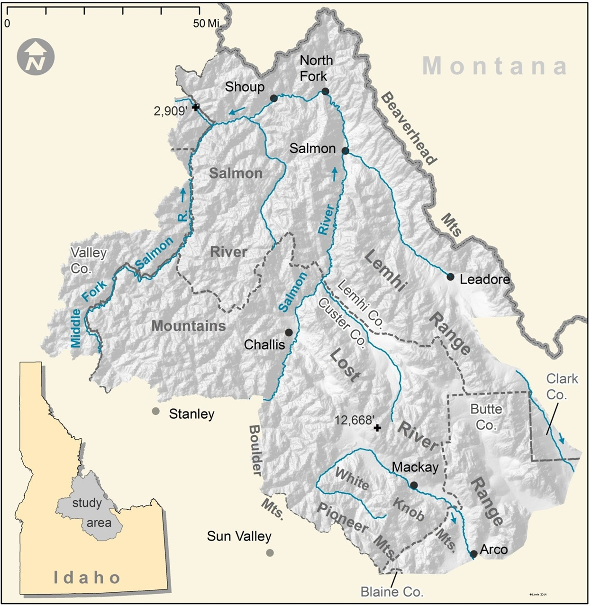
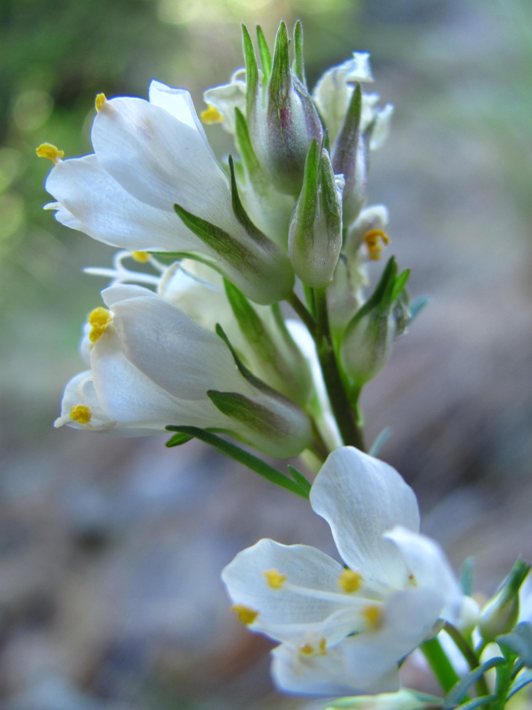

"A systematic survey to catalog all plant species and infraspecific taxa, and their distributions, within a defined geographic area.”
{kind=link}
My master’s thesis was more than a research project; it was a three-year immersion into the vast and rugged landscapes of east-central Idaho. Spanning approximately 27,000 square kilometers, this floristic inventory was my effort to document the remarkable plant diversity of the region. I surveyed seven mountain ranges, exploring forests, rangelands, wetlands, and alpine summits, with each day bringing new botanical discoveries.
The volume of specimens and geographic area of this project far surpassed that of typical botanical inventories. I finished the project with 1,349 unique taxa identified from 11,237 specimens. While surveying, I often reached a local high point that rewarded me with expansive views stretching out to each horizon – all of it my study area. Given the limited number of surveys I alone could complete, selection of survey hike routes was a carefully planned, but organic process that combined information from previous botanical records, aerial imagery, and a variety of geospatial data. Survey routes were selected for their potential to host species not yet documented, regardless of access roads, trail systems, or terrain.
My summers were a frantic cycle: one or two days spent collecting specimens, followed by one or two days pressing them. Dr. Hartman supplied me with a custom-built rack that could dry over 250 specimens in just a few days. The streamlined process of collecting and pressing without first identifying plants enabled me to maximize my time exploring habitats and documenting plant diversity. Although statistical analysis of species distributions or geospatial relationships was not a component of my thesis, I attempted to demonstrate the opportunity to do so by plotting survey sites both geographically and in environmental space.
Field work sharpened my botanical eye. Although I began the project with basic knowledge of local plant genera, my true growth was in learning to recognize subtle variations in plants and populations. I collected and pressed everything, from cacti to pine trees, and from thistles to poison ivy. The process enabled creative solutions towards preserving specimens not conducive to being flattened. For example, thick stems had to be sliced thin on one side, tree twigs shaved down on one side, and tall stems folded accordion style to fit on an herbarium sheet.
The repetition of collecting every species in each new location was crucial. It wasn’t until I was back in the lab, keying out plants at the end of each summer, that I truly began to see the finer distinctions–discovering the subtle differences between cryptic and similar appearing taxa that had eluded me in the field. The process of discovery and pattern recognition became the foundation of my expertise, honed over three years of intense fieldwork.
The project was a masterclass in both botany and resilience. To reach remote survey locations, I relied on my personal vehicle, a low-clearance Honda Civic that was otherwise inappropriate for Idaho’s back roads. Long distances to remote locations forced me to hone skills in assessing and traversing 4wd roads. Physical demands were also intense with most surveys taking me across dangerous scree slopes and up hundreds of meters of elevation gain.
I’m especially proud that I documented a previously undescribed species, Polemonium elusum, while completing my project. The species is unique in that it occupies a wide range of habitats but is confined to a small geographic area. While completing my thesis, Dr. Hartman and I worked with (then also a graduate student) Rebecca Stubbs to describe the morphologic, geographic and evolutionary significance of the species.
"Do not jump into your automobile next June and rush out…hoping to see some of that which I have attempted to evoke in these pages. In the first place you can't see anything from a car; you've got to get out of the [expletive] contraption and walk, better yet crawl, on hands and knees…When traces of blood begin to mark your trail you'll see something, maybe. Probably not.”
While in my study area, I took many photos of individual species. I’ve since uploaded them to iNaturalist and grouped them under a project that you may access here:
https://www.inaturalist.org/projects/floristic-inventory-photographsI took many, photos while completing this project. Below is a small selection I’ve chosen to illustrate some aspects of the fieldwork and the variety of landscapes: